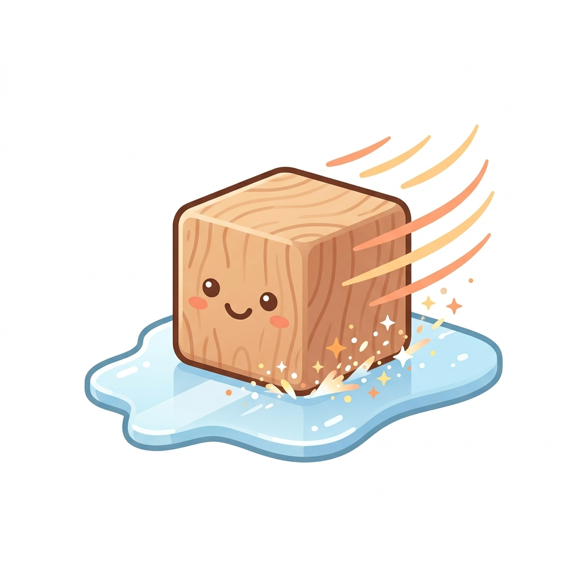
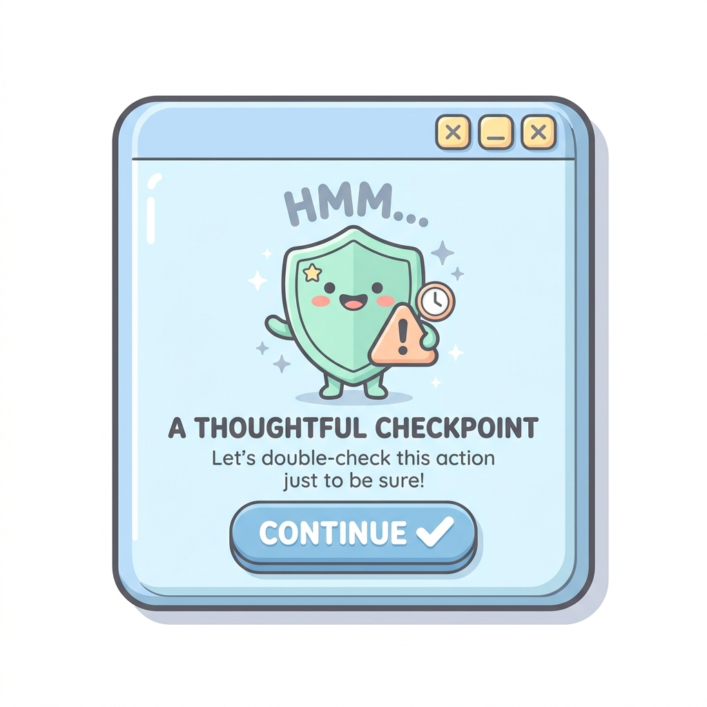
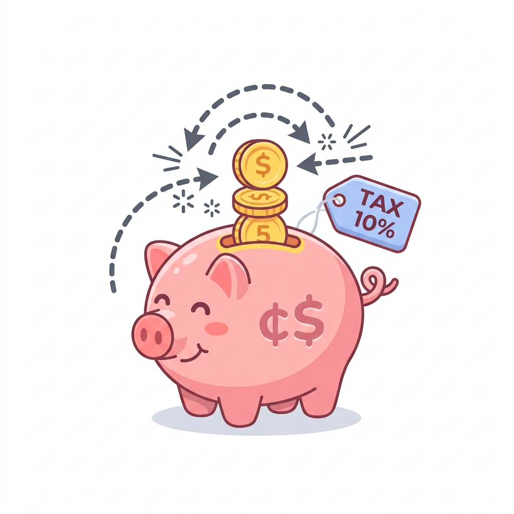
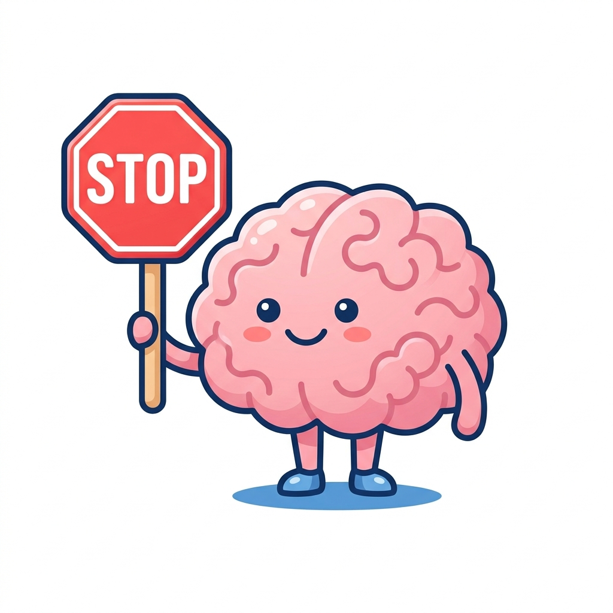

Physics
μ ranges: 0.01 – 1.2
Where friction was first defined. F = μN governs everything from car brakes to walking. Without static friction, you couldn't take a single step. Without kinetic friction, everything would slide forever — a world of pure chaos.

UX Design
Intentional resistance
Designers remove friction to create smooth flows — but intentional friction prevents mistakes. A "Are you sure?" dialog is friction that saves you. No friction = accidental purchases, impulsive deletions, regrettable sends.

Economics
Transaction costs
Market friction — taxes, information asymmetry, switching costs — is what allows monopolies to exist but also what makes local markets possible. Zero-friction markets are frictionless dystopias where only giants survive.

Psychology
Cognitive resistance
Psychological friction — the discomfort of change, the effort of thinking — slows bad decisions. Behavioral economics uses friction as a nudge: making junk food harder to grab, making gym sign-ups easier, making 401k opt-out by default.